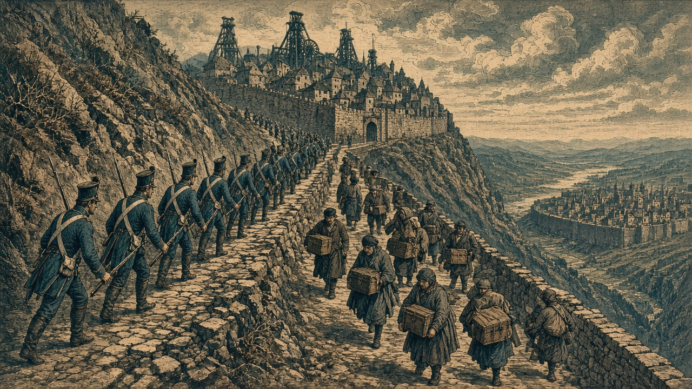

二つの首都、同じ期に陥落
アルガリストとアルヴェナを占領
泰平天国が遷都2期目の帝都へ カペレナ王国は黒潮首都を奪う

【総合部】第146期、セントラ大陸東部の新首都アルガリスト（49,39）が泰平天国の占領下となり、アカピ大陸北部の黒潮自治国首都アルヴェナ（20,17）もカペレナ王国に占領された。二国の首都が同じ期に陥落する異例の事態である。
アルガリスト帝国は第143期に旧首都を失い、第144期にヴァルセナ北東の町へ遷都した。しかし、新都もわずか2期で占領された。北の森では帝国第3軍歩兵が泰平の砲兵と山岳兵による集中攻撃で全滅。帝国の人口は33,300人、兵力13,700人、領地22区画となり、星書廉宰相は泰平へ停戦を打診した。第145期に8,600人だった兵力は増えたものの、政府の拠点は再び失われた。大都市ヴァルセナ（48,40）と南東の炭坑・港はなお帝国領に残る。
黒潮では、首都北西の森（19,16）を守った第3方面軍歩兵がカペレナ海兵の攻撃で全滅し、北隣（20,16）の部隊も失われた。首都アルヴェナはカペレナ領へ移り、黒潮政府は再び首都を失った。人口18,900人、兵力9,900人、領地19区画。潮見玄吾議長はカペレナとオリョルッルの双方へ停戦を打診しながら、「停戦してやってもいい」と強気の姿勢を崩していない。詳報は2面。
朱川、再びミサイルで市民11,800人死亡
オラニウム連邦のミサイルが朱川共和国の都市（67,10）を壊滅させ、一般市民11,800人が死亡した。第144期の丹城事件に続く大量の市民犠牲となった。朱川は前期、オラニウムへ停戦を打診している。詳報は3面。
なのです、軍事陣営「同盟軍」に正式加入
青海共和国が加入申請を承認し、なのです主義人民共和国は青海・黒潮と同じ軍事陣営「同盟軍」に正式加盟した。陣営の人口は1,137,300人、兵力は584,200人、領地は388区画。加盟国の黒潮が同じ期に首都を失う一方、大国なのですの加入で陣営の勢力は大きく変わった。桃谷連邦共和国もオラニウム連邦へ宣戦し、第151期に開戦する予定。詳報は3面。
なのですからオリョルッルへ17万3,700人
仕事を求める173,700人がなのです主義人民共和国からオリョルッル王国へ渡った。ほか3組を合わせた今期の移民は269,100人に達する。一方、6か国18か所の火災で94,400人が死亡。移住先では住まいと仕事を、新たな火災被災地では生活の再建を急ぐ。詳報は4面。